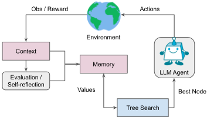
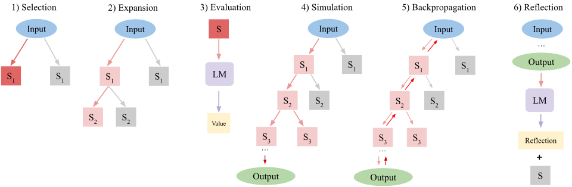
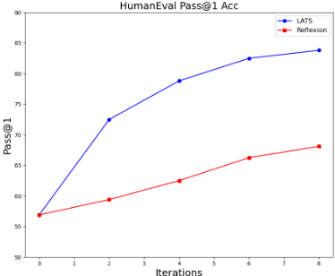
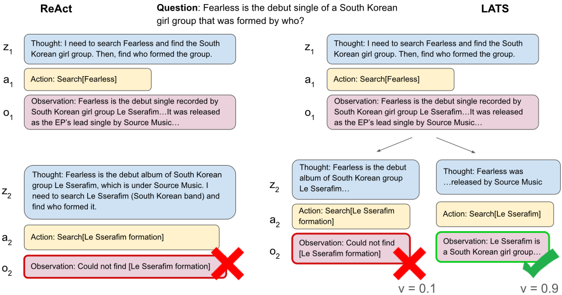

Language Agent Tree Search（LATS）：在语言模型中统一推理、行动与规划
现有 LM Agent 方法（如 ReAct）反射式地生成单一轨迹，不考虑多路径与前瞻规划，而 ToT、RAP 等搜索方法只依赖模型内部知识、缺乏外部反馈。论文提出 LATS，首次将推理、行动与规划统一：把 MCTS 适配到语言 Agent，通过 selection、expansion、evaluation、simulation、backpropagation、reflection 六个操作在推理与动作的组合空间中搜索最优轨迹，用同一个 LM 充当 Agent、价值函数（LM 评分 + self-consistency）与反思生成器，全程基于提示与 in-context learning、无需额外训练。实验上，LATS 在 HumanEval 用 GPT-4 达到 92.7% pass@1 的 SOTA，在 WebShop 用 GPT-3.5 取得 75.9 平均分、可比基于梯度的微调，并在 HotPotQA 上将 ReAct 性能翻倍。消融显示 LM 价值函数、MCTS 搜索与 self-reflection 缺一不可，且成功时 token 开销低于 ToT/RAP。对团队而言，这是 Agent harness 与规划-反思设计的代表性参考，可直接借鉴到代码生成与检索问答类 Agent 的可靠性提升。
现有 LM 提示方法存在三类缺陷：1) 灵活性不足——CoT、ReAct 等自回归采样单一轨迹，忽略其他可能的后续路径；2) 感知性不足——CoT、ToT、RAP 等推理式方法只依赖 LM 内部表示，无法利用外部观察，易产生幻觉与误差传播；3) 适应性不足——现有规划策略用简单搜索算法或无法利用环境反馈，Agent 是静态的、不能复用经验。论文旨在构建一个统一推理、行动与规划的通用框架，提升 LM 作为自主 Agent 的决策能力。
提出 LATS（Language Agent Tree Search）：核心贡献是将 MCTS 适配到语言 Agent。每个节点 s = [x, a_1..i, o_1..i] 由输入、动作序列与观察序列组成，树存储在外部长期记忆结构中。每次迭代执行六个操作：selection（用 UCT 平衡探索与利用）、expansion（从 p_theta 采样 n 个动作并与环境交互得到观察）、evaluation（价值函数 = LM 自评分与 self-consistency 评分的加权和，在获得环境反馈后评估）、simulation（扩展至终止状态获取客观反馈）、backpropagation（回传奖励更新路径上节点价值）、reflection（对失败轨迹生成语言化反思，与失败轨迹一起存入记忆，作为后续迭代 Agent 与价值函数的额外上下文）。利用 LM 的 in-context learning 能力，全部组件以提示实现、无需训练，且不需要 LM 充当世界模型；基础 Agent、反思生成器与价值函数可模块化替换。
HumanEval（GPT-4）：pass@1 达 92.7%，为 state of the art
WebShop（GPT-3.5）：平均分 75.9，无梯度方法性能可比基于梯度的微调；相比 ReAct 平均分提升 22.1
HotPotQA（GPT-3.5）：性能是 ReAct 的两倍；组合内部推理（CoT）与外部检索（ReAct）的 LATS 取得最高 EM
MBPP（GPT-3.5）：pass@1 在对比方法中最高
Game of 24（GPT-3.5）：超过专为推理设计的 ToT、RAP 等方法
消融（HotPotQA）：去掉 self-reflection 性能降 0.05；用 DFS 替代 MCTS 降 0.21；去掉 LM 价值函数（evaluation 操作）降 0.26
成本分析：与同类树搜索方法样本复杂度相同，成功时平均比 RAP 少扩展 3.55 个节点、比 ToT 少 12.12 个节点，token 开销更低
首个统一推理、acting 与规划的框架（论文自述）。与 ReAct、Reflexion 等反射式方法不同，LATS 用 MCTS 在多轨迹间做系统性搜索并考虑每步的备选动作；与 ToT、RAP 等纯内部推理搜索不同，LATS 引入环境外部反馈与 self-reflection，且不需要 LM 充当世界模型（RAP 受限于此）；价值函数在获得环境反馈后评估并结合 self-consistency，区别于 ToT 的 LM 启发式。论文还实证表明简单将 ToT/RAP 与 ReAct 提示组合并不足够，甚至不如纯推理设定，说明把搜索算法适配到决策场景是非平凡的设计问题。
相关度级别：high
命中能力域：3.3 Agent 架构与工具使用 | 3.2 提示工程 | 3.5 评测与可靠使用 | 3.1 上下文工程与记忆
理由：直接命中 3.3：LATS 是一个完整的单 Agent harness 设计（selection/expansion/evaluation/simulation/backpropagation/reflection 六操作循环），涵盖规划、反思、工具调用（Wikipedia API、网页 search/click 命令）与执行可靠性，正是团队'Agent 架构与工具使用'域的核心技术。方法完全基于提示与 in-context learning 实现，附录给出价值函数提示、反思提示与基础 acting/reasoning 提示的完整设计，属于 3.2 提示工程。论文对 token 消耗、样本复杂度与节点扩展数的量化对比对应 3.5 的成本与效率优化及评测方法。树节点与失败轨迹/反思存入外部记忆并作为后续上下文，与 3.1 的 Agent 记忆与结构化上下文组织相关（次要命中）。整体与团队'把模型用好而非训练模型'的定位高度契合。
建议动作：深入精读并做内部分享
arXiv:2310.04406v3 [cs.AI] 2024年6月6日
Andy Zhou 1 2 Kai Yan 1 Michal Shlapentokh-Rothman 1 Haohan Wang 1 Yu-Xiong Wang 1
尽管语言模型（Language Models, LMs）已在一系列决策任务中展现出潜力，但其对简单行动过程的依赖限制了它们作为自主智能体（autonomous agents）的广泛部署。在本文中，我们提出了语言智能体树搜索（Language Agent Tree Search, LATS）——首个将语言模型在推理、行动和规划方面的能力协同起来的通用框架。通过利用语言模型的上下文学习（in-context learning）能力，我们将蒙特卡洛树搜索（Monte Carlo Tree Search）集成到 LATS 中，使语言模型能够充当智能体，并辅以由语言模型驱动的价值函数和自我反思，从而实现熟练的探索和更强的决策能力。我们方法的一个关键特征是引入了用于外部反馈的环境，这提供了一种更加审慎且自适应的问题求解机制，超越了现有技术的局限。我们在包括编程、交互式问答（QA）、网页导航和数学在内的多个领域开展的实验评估，验证了 LATS 在决策方面的有效性与通用性，同时保持了具有竞争力或有所提升的推理性能。值得注意的是，LATS 在使用 GPT-4 于 HumanEval 上进行编程时达到了最先进的 pass@1 准确率（92.7%），并在使用 GPT-3.5 于 WebShop 上进行网页导航时展现出了与基于梯度的微调相当的免梯度性能（平均得分 75.9）。代码可在 https://github.com/lapisrocks/LanguageAgentTreeSearch 获取。
能够在多种环境中进行推理与决策的通用自主智能体（Wooldridge
1 伊利诺伊大学厄巴纳-香槟分校。2 Lapis Labs。通讯作者：Andy Zhou <andyz3@illinois.edu>。
第 41 届国际机器学习会议论文集，奥地利维也纳。PMLR 235，2024。版权所有 2024 归作者所有。

and Jennings, 1995）长期以来一直是人工智能领域关注的焦点。尽管这一主题传统上是在强化学习中进行研究的，但近期崛起的语言模型（LMs）（Brown et al., 2020; Chowdhery et al., 2023; Touvron et al., 2023; OpenAI, 2023）凭借其强大的推理能力与通用适应性，提供了一种替代范式。LMs 不仅在摘要（Nallapati et al., 2016）、语言推理（Bowman et al., 2015）等标准自然语言处理（NLP）任务中表现卓越，还被适配到日益多样化的任务中，这些任务往往需要高阶的常识推理或定量技能（Cobbe et al., 2021; Saparov and He, 2023）。此外，LMs 还能够在涉及知识与推理的复杂环境中执行任务，例如网页导航（Yao et al., 2022; Deng et al., 2023）、工具调用（Schick et al., 2023）以及开放式游戏（Fan et al., 2022）。
通过利用来自外部环境的反馈或观察来增强 LMs 的提示技术，推理与行动能力得到了进一步提升，ReAct（Yao et al., 2023b）及其他工作（Gao et al., 2023; Shinn et al., 2023）便是例证。这消除了完全依赖 LMs 基础能力的需要，转而通过外部工具或语义反馈对其加以增强。尽管具备上述优势，这些方法仍是反射式的，达不到人类在解决问题时所表现出的深思熟虑、缜密周详的决策特征（Sloman, 1996; Evans, 2010）。尤其是，它们无法考虑多条推理路径，也无法提前进行规划。近期的搜索引导式 LM 研究（Xie et al., 2023; Yao et al., 2023a; Hao et al., 2023）通过在多条推理链上进行搜索来解决这一问题。虽然这类方法实现了规划，但它们孤立地运行，缺乏对能够改进推理的外部反馈的整合。
为了克服这些挑战，我们提出了语言智能体树搜索（Language Agent Tree Search, LATS）——一个利用语言模型（LM）进行决策与推理的统一框架。如图 1 所示，LATS 通过将 ReAct（Yao et al., 2023b）扩展为在可能的推理与行动步骤构成的组合空间上进行搜索，从而将 LM 的推理、行动与规划策略协同起来。这项工作绝非易事——将搜索算法适配到语言智能体（language agent）上，以及从非交互式任务转向交互式任务，都需要对节点、提示和搜索算法进行大量全新的设计。具体而言，节点和提示必须能够有效地存储和检索外部反馈，同时搜索算法需要将这些信息融入用于价值赋值的有用启发式方法中。事实上，正如 5.1 节中在 HotPotQA（Yang et al., 2018）上展示的实证评估所揭示的，对现有方法进行简单组合是不够的——即使能够获取来自环境的真实答案（ground truth answer），其表现甚至无法超越内部推理的性能。
支撑 LATS 的关键洞察是将蒙特卡洛树搜索（Monte Carlo Tree Search, MCTS）适配到语言智能体上——这一思路受到 MCTS 在基于模型的强化学习（Silver et al., 2017）中取得成功的启发，也源于许多 LM 任务允许回退到较早步骤这一观察——并将预训练 LM 重新用作智能体，为其配备由 LM 驱动的价值函数和自我反思，以实现更聪明的探索。利用现代 LM 的通用能力和上下文学习（in-context learning）能力，我们以语言作为各组件之间的接口，使 LATS 无需额外训练便能根据环境条件调整规划。据我们所知，LATS 是首个将推理、行动与规划相结合以提升 LM 性能的框架。值得注意的是，在使用 GPT-3.5 的情况下，LATS 在 HotPotQA（Yang et al., 2018）上将 ReAct（Yao et al., 2023b）的性能翻了一番，并在 WebShop（Yao et al., 2022）上将平均得分提高了 22.1。当与 GPT-4 配合使用时，LATS 在 HumanEval（Chen et al., 2021）上取得了 92.7 的 Pass@1 率，达到了最先进水平。
我们的贡献如下：1）我们提出了 LATS，这是一个基于蒙特卡洛树搜索的框架，用于从采样的动作中构建最佳轨迹，与反射式提示方法相比，能够实现更灵活、更具适应性的问题求解。2）我们提出了一种新颖的价值函数，用于引导搜索过程，并融入了自我精炼（self-refinement）和自洽性（self-consistency）等成功的启发式方法。3）通过整合外部反馈与自我反思，LATS 增强了模型的敏感性，使智能体能够从经验中学习，从而超越了基于推理的搜索方法。通过在包括编程、交互式问答（QA）、网页导航和数学在内的多个领域开展的实验，我们展示了 LATS 在增强自主推理与决策方面的通用性。
用于推理的语言模型。对语言模型（LMs）而言，推理是指将复杂输入分解为通向最终答案的顺序中间步骤（Cobbe et al., 2021），这一能力已通过思维链（CoT）提示（Wei et al., 2022）及其变体（Wei et al., 2022; Kojima et al., 2022; Wang et al., 2022）得到展示。然而，这些在单一步骤中自回归地生成思维链的方法，随着步骤数量的增加，往往会由于复合误差而遭受误差传播的影响（Guo et al., 2018; Chen et al., 2023b）。各种改进旨在缓解这一问题；一些方法（如自洽性（self-consistency）（Wang et al., 2022））对采样得到的多条思维链采用多数投票，而另一些方法则专注于多步分解，例如由易到难提示（least-to-most prompting）（Zhou et al., 2022）。最近，CoT 已借助能够更有效采样轨迹的搜索算法（Yao et al., 2023a; Hao et al., 2023; Besta et al., 2023）得到改进。思维树（Tree-of-thought, ToT）提示（Yao et al., 2023a）使用由语言模型生成的启发式方法所引导的基于 DFS 或 BFS（深度/广度优先）的搜索，而基于规划的推理（reasoning via planning, RAP）（Hao et al., 2023）则使用 MCTS，其 rollout 由语言模型模拟。然而，它们仅依赖语言模型的内部知识，无法适应有用的外部反馈。
用于行动的语言模型。语言模型强大的推理与常识能力已被进一步适配为交互式环境中的策略模型，用于执行决策或行动任务。在机器人领域，语言模型已被用作控制策略的高层控制器（Ahn et al., 2022; Huang et al., 2022; Driess et al., 2023）。类似的工作（Baker et al., 2022; Wang et al., 2023）还将语言模型智能体适配到诸如 Minecraft 这样的复杂多模态游戏中（Guss et al., 2019; Fan et al., 2022）。语言模型在基于文本的环境（Liu et al., 2018; Shridhar et al., 2020; Liu et al., 2024）中尤为有用，诸如 ReAct（Yao et al., 2023b）等基于行动的提示技术在其中取得了成功。与 CoT 类似，ReAct 受其简单性所限，无法有效适应环境条件。为解决这一问题，已有许多扩展方法被提出，包括利用自我改进来增强推理与决策的自我精炼（self-refine）（Madaan et al., 2023）和 Reflexion（Shinn et al., 2023），以及同时纳入正反馈与负反馈的 AdaPlanner（Sun et al., 2023）。然而，这些方法专注于精炼单条轨迹，并未考虑每一步的备选选择。此外，最近的工作（Huang et al., 2024）表明，语言模型无法自我纠正其内部推理，这使得利用外部反馈变得至关重要。作为纯决策环境的替代方案，通过提供对外部工具（如 API、搜索引擎、计算器和其他模型）的访问，语言模型的推理与实用能力得到了增强（Schick et al., 2023; Shen et al., 2023; Sur´ ıs et al., 2023）。我们在表 1 中总结了先前的工作。
基于树的搜索。基于树的搜索是指在搜索过程中探索结果的多个分支，因其具有良好的探索-利用权衡（exploration-exploitation trade-off），而被广泛应用于许多规划算法（Swiechowski et al., 2021; LaValle, 1998）以及强化学习（reinforcement learning, RL）算法（Hafner et al., 2019; Du et al., 2023; Wu et al., 2023）中。需要注意的是，尽管基于树的搜索需要一个能够从任意状态进行扩展的环境模型（Vodopivec et al., 2017），而这在强化学习中通常需要额外的训练（Hafner et al., 2023），但对于大多数语言模型（LM）任务而言，这一问题并不存在。这是因为在许多任务中，我们可以通过将输入设置为上下文以及 LM 相应的先前输出，来方便地回退到任意状态。因此，我们在基于树的框架上进行操作，并使用蒙特卡洛树搜索（MCTS）（Swiechowski et al., 2021）来充分释放 LM 的潜力。此外，我们通过利用 LM 的上下文学习（in-context learning）能力（Brown et al., 2020），避免了在语言描述上训练价值函数的成本。并行工作（Liu et al., 2023）也探索了将搜索算法与 LM 智能体相结合，但其使用的是现成的搜索算法，这对 LM 而言可能并非最优。最后，遵循 Yao et al. (2023a) 和 Hao et al. (2023) 的做法，我们指出在本文中“规划”与“搜索”算法这两个术语可互换使用。
| Approach | Reasoning | Acting | Planning | Self- Reflection | External Memory |
|---|---|---|---|---|---|
| CoT (Wei et al., 2022) | ✓ | × | × | × | × |
| ReAct (Yao et al., 2023b) | ✓ | ✓ | × | × | × |
| ToT (Yao et al., 2023a) | ✓ | × | ✓ | ✓ | ✓ |
| RAP (Hao et al., 2023) | ✓ | × | ✓ | × | ✓ |
| Self-Refine (Madaan et al., 2023) | ✓ | × | × | ✓ | × |
| Beam Search (Xie et al., 2023) | ✓ | × | × | ✓ | × |
| Reflexion (Shinn et al., 2023) | ✓ | ✓ | × | ✓ | ✓ |
| LATS (Ours) | ✓ | ✓ | ✓ | ✓ | ✓ |
| Approach | Reasoning | Acting | Planning | Self- Reflection | External Memory |
ReAct（Yao et al., 2023b）将语言模型（LM）扩展到这样一类任务：从 x 到 y 的映射会通过与外部环境（如游戏或 API）的交互而得到增强，或本身就需要此类交互。该技术构建了一个动作空间 ˆ A = A ∪ Z，在来自思维链（CoT）
根据基础提示框架的设计，LATS 支持序列推理或决策任务。在时间步 t，智能体（agent）从环境中接收观测 o t ∈ O，并按照某种策略 π ( a t | x, o 1 ··· t - 1 , a 1 ··· t - 1 ) 采取动作 a t ∈ A。我们用 p θ 对智能体进行初始化，以利用语言模型（LM）中有用的语言表示来充当基础决策器。我们遵循 ReAct 的实例化方式，其中动作空间 ˆ A = A ∪ Z 由允许动作的空间 A 与推理轨迹的语言空间 Z 共同构成。动作直接影响环境并产生观测，而思维则用于通过组织信息、规划未来动作或注入内部知识来将决策形式化。动作空间的具体实例化取决于特定的环境——对于决策任务，动作可能由网站上的命令组成；而对于推理任务，动作空间可能仅限于少数几个外部工具或 API。在没有反馈的环境（例如推理任务）中，我们使用思维链（CoT）作为基础提示框架。
我们不再贪婪地解码出单条轨迹或单个解，而是利用当前状态从 p θ 中采样 n 个动作。这一做法基于如下直觉：对于复杂的决策任务，很可能存在一系列正确的潜在轨迹或推理路径 (Evans, 2010)。在每一步采样一组多样化的候选动作，可以缓解 LM 文本生成的随机性，并在决策空间和推理空间中都实现更大程度的探索。我们将 p θ 封装进我们提出的搜索算法中，以便从采样得到的动作中有目的地构建出最佳轨迹。
The main component of LATS is a search algorithm that controls the problem-solving process with planning. To find the most promising trajectory and systemically balance exploration with exploitation, we adopt a variant of MCTS that frames decision-making as a tree search, in which each node s = [ x, a 1 ··· i , o 1 ··· i ] represents a state comprising the original input x , action sequence a 1 · i , and observation sequence o 1 · i , where i is a token in the text sequence.
Our main technical contribution is adapting MCTS to language agents . LATS repurposes p θ as an agent, state evaluator, and feedback generator, leveraging the useful language representations of modern LMs to facilitate planning. While standard MCTS and RAP (Hao et al., 2023) rely on internal dynamics models to facilitate simulation, LATS uses environment interaction and does not require a world model. As depicted in Fig. 2, LATS consists of a series of operations - selection, expansion, evaluation, simulation, backpropagation, and reflection - performed in succession until the task is successfully completed or a computational limit is reached after sampling k trajectories. The full pseudocode of LATS can be found in Sec. A in the Appendix.

Selection. In the first operation, the algorithm identifies a segment of the current tree most suitable for subsequent expansion. Starting from the root node, denoted as the initial state s 0 , a child node is selected at each tree level until a leaf node is reached. To balance exploration and exploitation, we use the UCT algorithm as shown in Eq. 1.
Expansion. After selecting a node, the second operation expands the tree by sampling n actions from p θ , as described in the prior section. The environment receives each action and returns corresponding feedback as an observation. This results in n new child nodes added to the tree. This tree is stored in an external long-term memory structure.
Evaluation. The third operation assigns a scalar value to each new child node for selection and backpropagation. This value effectively quantifies the agent's progress in task completion, serving as a heuristic to steer the search algorithm towards the most promising regions of the tree. As LATS does not involve training, we propose a novel value function for this setting based on two components: (1) a self-generated LM score and (2) a self-consistency score.
受 ToT 的启发，我们通过提示 p θ 对给定状态进行推理，从而将其改造为价值函数（value function）。为了得到标量值，我们指示 p θ 在其推理轨迹的结尾给出一个表示轨迹正确性的分数。我们与 ToT 的关键区别在于，我们是在获得环境反馈之后才获取该价值，从而改进了价值赋值。这也使得本方法能够扩展到更具挑战性的环境，因为 LM 在没有外部反馈的情况下难以改进自身的响应 (Huang et al., 2024)。此外，为了进一步改进价值赋值，我们引入了一种基于自洽性（self-consistency）的额外启发式方法 (Wang et al., 2022)，其思想是：在同一状态下被多次采样到的动作往往更加准确。由此得到如下的整体价值函数：
其中 λ 为超参数。值得注意的是，与程序化启发式方法 (Campbell et al., 2002) 相比，我们的方法具有更强的灵活性；而与学习式启发式方法 (Silver et al., 2017) 相比，则具有更高的效率。
模拟（Simulation）。第四种操作是扩展当前选中的节点，直至到达终止状态。在每个深度层级上，我们使用相同的操作对节点进行采样和评估，但会优先处理价值最高的节点。到达终止状态可以为轨迹的正确性提供客观反馈。如果任务成功完成，LATS 便终止搜索。如果解部分成功或未成功，我们则执行下文所述的两种额外操作。轨迹是否成功由特定环境的设计所决定，例如在网页导航环境中完成一次购买。
反向传播（Backpropagation）。该操作根据轨迹的结果来更新树中各节点的价值。对于搜索树中从根节点（初始状态 s 0）到叶节点（终止状态 s l）的轨迹上的每个节点 s 0 , s 1 , . . . , s l，其价值都会被更新以反映模拟的结果，更新方式为 N ( s i ) = N ( s i - 1 )+1 和 V ( s i ) = V ( s i - 1 ) N ( s i - 1 )+ r N ( s i )，其中 r 为奖励。这些更新后的价值将用于 UCT 公式（式 1）中，以指导下一个节点的选择。
反思（Reflection）。除环境反馈之外，我们还利用自我反思来进一步改进决策过程 (Shinn et al., 2023; Madaan et al., 2023)。当遇到未成功的终止节点时，我们会将轨迹和最终奖励作为提示提供给 p θ，使其给出一段言语化的自我反思，总结推理或行动过程中的错误，并提出更优的替代方案。我们将失败的轨迹及相应的反思都存储在记忆中。在后续迭代中，这些内容会作为额外的上下文整合给 agent 和价值函数，并通过上下文学习（in-context learning）对二者同时加以改进。这提供了一种比标量值更有用的语义梯度信号，使 agent 能够从试错中学习，而无需承担强化学习这类昂贵优化的代价。
| Prompt Method | HotpotQA (EM) ↑ |
|---|---|
| Base LM | 0.32 |
| CoT (Wei et al., 2022) | 0.34 |
| CoT - SC (Wang et al., 2022) | 0.38 |
| ToT (Yao et al., 2023a) | 0.55 |
| RAP (Hao et al., 2023) | 0.6 |
| RAP ( n = 10 ) | 0.6 |
| LATS (CoT) | 0.62 |
| Prompt Method | HotpotQA (EM) ↑ |
讨论。从概念上讲，LATS 作为一种利用 LM 智能体进行推理与决策的通用框架，具有若干显著优势。(1) 通用性：LATS 通过定义一个共享的思维与动作空间，同时支持推理任务和决策任务。(2) 深思熟虑：在 LATS 中利用 MCTS 和 LM 价值函数，确保了一种有原则的搜索，能够在探索有前景的备选方案的同时选择高价值的选项。(3) 适应性：LATS 通过观测和自我反思引入外部反馈，使其在问题求解过程中具备更强的适应能力。(4) 灵活性：LATS 可以通过修改状态设计和树的维度，来适应不同的场景、环境和资源规定。(5) 模块化：基础 LM 智能体、反思生成器和价值函数可以独立地进行修改和调整，以适配各个 LM 自身的特性。
为了证明 LATS 的通用适用性，我们在多种需要推理与行动的领域上评估了我们的方法：编程（Chen et al., 2021; Austin et al., 2022）、HotPotQA（Yang et al., 2018）、WebShop（Yao et al., 2022）以及 Game of 24（Yao et al., 2023a）。
| Prompt Method | HotpotQA (EM) ↑ |
|---|---|
| ReAct (Yao et al., 2023b) | 0.32 |
| ReAct (best of k ) | 0.38 |
| Reflexion (Shinn et al., 2023) | 0.51 |
| ToT (ReAct) | 0.39 |
| RAP (ReAct) | 0.54 |
| LATS (ReAct) | 0.63 |
| LATS ( n = 3 ) | 0.58 |
| LATS ( n = 10 ) | 0.65 |
| LATS (CoT + ReAct) | 0.71 |
| Prompt Method | HotpotQA (EM) ↑ |
For a task that can be approached with both reasoning-based and acting-based strategies, we consider HotPotQA (Yang et al., 2018), a multi-hop question-answering benchmark that requires retrieval over two or more Wikipedia passages. For the action space, in addition to LM thoughts, we follow the setup from Yao et al. (2023b), which provides the agent with API calls to search and retrieve information. The output of these API calls and self-generated reflections form the observation space. Note that consistent with previous work (Yao et al., 2023b; Shinn et al., 2023), we use an oracle setup for HotPotQA, in which the environment provides feedback about the answer's correctness upon receiving an answer. This enables a fair comparison between our method and baselines in scenarios where the quality of feedback is high, allowing us to focus our evaluation on how well the agent incorporates external feedback. We use a subset of 100 questions and three few-shot examples for each method. For ToT, we use DFS as the base search algorithm. For all methods that involve sampling, including LATS, we sample k = 50 trajectories. More details are in Appendix Sec. D.
We evaluate internal reasoning strategies by removing actions and observations from the context, corresponding to CoT (Wei et al., 2022) and its variants, CoT-SC (Wang et al., 2022), ToT (Yao et al., 2023a), and RAP (Hao et al., 2023). These methods rely solely on the agent's existing knowledge to answer the question. We further consider acting-based methods ReAct, Reflexion, and LATS, which augment the agent with the interactive API environment and primarily evaluate its information retrieval abilities. We also design a simple integration of search algorithms with LM agents, extending ToT and RAP with ReAct prompting to handle external observations. In addition, while LATS is designed for scenarios where external feedback can enhance reasoning, we also implement a reasoning-only version with CoT as the base prompting framework. Moreover, we combine internal and external reasoning in LATS by first prompting with a CoT-based prompt and then switching to a ReActbased prompt upon failure. This is closer to how humans might approach this task by using tools to retrieve additional information only when the answer is not already known.
| Prompt Method | Model | Pass@1 ↑ |
|---|---|---|
| CoT (Wei et al., 2022) ReAct (Yao et al., Reflexion (Shinn et ToT (Yao et al., 2023a) RAP (Hao et al., | GPT-3.5 | 46.9 |
| 2023b) | GPT-3.5 | 56.9 |
| al., 2023) | GPT-3.5 | 68.1 |
| GPT-3.5 | 54.4 | |
| 2023) | GPT-3.5 | 63.1 |
| LATS (ReAct) | GPT-3.5 | 83.8 |
| Base LM | GPT-4 | 80.1 |
| Reflexion | GPT-4 | 91 |
| LATS (ReAct) | GPT-4 | 92.7 |
| Prompt Method | Model | Pass@1 ↑ |
Results. We observe in Tab. 2 and Tab. 3 that both internal reasoning and external retrieval strategies perform well on HotPotQA. Due to their large-scale training corpus, modern LMs already encode factual knowledge and can often directly answer the question correctly. While CoT can slightly enhance performance on questions requiring reasoning, larger gains are observed with search methods ToT and RAP (Tab. 2, Row 4, 5), which can sample and explore more outputs. We observe similar results for acting-based methods. LATS surpasses ReAct, even when sampling the same number of trajectories, by expanding more nodes with principled search. This is demonstrated when modifying n , the number of nodes expanded during each iteration. Increasing n can consistently improve performance, although at greater computational and inference costs. LATS also outperforms RAP on internal reasoning, but has higher performance on the decision-making setting of HotPotQA than the reasoning setting. Contrary to LATS, the ReAct versions of ToT and RAP (Tab. 3, Row 4, 5) perform even worse than the reasoning-only setting of HotPotQA, which indicates that the acting-based setting is more challenging and adaptation of search algorithms to decision-making scenarios is non-trivial . Combining internal and external reasoning in LATS results in the highest performance, indicating the importance of external feedback in augmenting reasoning even in tasks where the base LM can already perform.
| Prompt Method | Pass@1 ↑ |
|---|---|
| CoT (Wei et al., 2022) | 54.9 |
| ReAct (Wei et al., 2022) | 67 |
| Reflexion (Shinn et al., 2023) | 70 |
| ToT (Yao et al., 2023a) | 65.8 |
| RAP (Hao et al., 2023) | 71.4 |
| LATS (ReAct) | 81.1 |
| Prompt Method | Pass@1 ↑ |
为了证明外部观察对于复杂推理任务的重要性，我们在编程任务上使用 HumanEval（Chen et al., 2021）1 和 MBPP（Austin et al., 2022）对基线方法和 LATS 进行评估。这两个数据集都用于衡量根据自然语言文档字符串（docstring）合成的 Python 程序的正确性。我们将单个解作为动作空间，并将测试套件和编译器反馈作为外部观察。我们遵循 Chen et al. (2023a) 的做法，使用语言模型（LM）为每个问题生成一个由语法有效的 'assert' 语句组成的合成测试套件。在每一步中，解都会在该测试套件上进行评估，评估结果（包括成功和失败的测试以及编译器输出）会作为观察添加到上下文中。
对于该任务，推理和行动基线共享相同的动作空间，但行动方法能够将观察作为额外上下文纳入其中。对于 LATS，由于每个动作对应一个完整的解，我们跳过 LATS 的模拟步骤，直接将通过测试的百分比作为反向传播的奖励。我们使用 k = 8 次迭代，将生成测试的数量设为 4，并在扩展期间采样 n = 5 个解。搜索完成后，我们选择价值最高的解，并在真实测试套件上对其进行评估，以进行 pass@1 准确率评估。更多细节见附录 D 节。
结果。表 4 和表 5 表明，搜索和语义反馈对于取得更好的性能都至关重要。尽管未使用观察，ToT 和 RAP 仍与 Reflexion 具有竞争力。LATS 在两个数据集上均取得了最高性能。RAP 使用了与 LATS 类似的搜索算法，这揭示了外部反馈对于编程等困难推理任务的重要性。使用 GPT-4 时，采用 LATS 在 HumanEval 上达到了最先进水平，验证了 LATS 可以与更先进的 LM 结合使用以获得更高性能。
1 一些基线方法使用 HumanEval 中的 161 个问题。我们对 LATS 使用全部 164 个问题，发现性能差异极小，因此我们报告两种设置下的基线结果。
| Method | Score ↑ | SR ↑ |
|---|---|---|
| ReAct (Yao et al., 2023b) | 53.8 | 28 |
| ReAct (best of k) | 59.1 | 32 |
| Reflexion (Shinn et al., 2023) | 64.2 | 35 |
| LATS (ReAct) | 75.9 | 38 |
| IL (Yao et al., 2022) | 59.9 | 29.1 |
| IL+RL (Yao et al., 2022) | 62.4 | 28.7 |
| Fine-tuning (Furuta et al., 2024) | 67.5 | 45 |
| Expert | 82.1 | 59.6 |
| Method | Score ↑ | SR ↑ |
对于一个具有实际应用的复杂决策环境，我们考虑 WebShop（Yao et al., 2022），这是一个在线购物环境，由一个包含 118 万真实商品和 1.2 万条人类指令的网站组成。智能体（Agent）必须通过多种命令在网站上导航，以购买符合用户规格的商品。我们使用预先构建的由搜索和点击命令组成的动作空间，并以浏览器反馈和反思作为观测。性能通过两个指标来衡量：平均分数，反映所选商品满足用户指定属性的百分比；以及成功率，表示所选商品满足所有给定条件的频率。我们将其与基于行动的提示方法以及基于强化学习（RL）的方法进行比较。我们在 50 条指令上进行评估，为 LATS 扩展 n = 5 个子节点，并对 LATS、ReAct（best of k）和 Reflexion 设置 k = 30。更多细节和提示见附录 D 节和 G 节。
结果。我们在表 6 中发现，使用 ReAct 的 GPT-3.5 与模仿学习（IL）相当，并且在采用更强的提示策略时能够超越强化学习技术。使用 ReAct 和 Reflexion 采样 k = 30 条轨迹得到了相近的性能，这表明语义反馈在 WebShop 这类复杂环境中帮助不大。与 Shinn et al. (2023) 类似，我们发现生成的反思往往过于笼统，无法提供有用的反馈，导致智能体倾向于陷入局部极小值。然而，使用 LATS 确实带来了显著的改进，这表明在相同迭代次数下探索更为有效。
We further test the reasoning ability of LATS on Game of 24, and also conduct additional experiments on HotPotQA to demonstrate the effect of each component of LATS (results Table 8. Ablation results on LATS and baseline variants in HotPotQA. We use ReAct as the base prompt and sample n = 5 children and k = 50 trajectories. LATS requires every component and operation for optimal performance.
| Prompt Method | Game of 24 (Success Rate) ↑ |
|---|---|
| CoT (Wei et al., 2022) | 0.08 |
| Reflexion (Shinn et al., 2023) | 0.12 |
| ToT (Yao et al., 2023a) | 0.2 |
| RAP (Hao et al., 2023) | 0.4 |
| LATS (CoT) | 0.44 |
| Prompt Method | Game of 24 (Success Rate) ↑ |
| Prompt Method | HotPotQA (EM) ↑ |
|---|---|
| ToT (ReAct) | 0.39 |
| RAP (ReAct) | 0.54 |
| LATS (No LM Heuristic) | 0.37 |
| LATS (DFS) | 0.42 |
| LATS (No Reflection) | 0.58 |
| LATS (ReAct) | 0.63 |
| Prompt Method | HotPotQA (EM) ↑ |
shown in Tab. 8). More ablations for token consumption on HotPotQA are in Tab. 9 in Appendix Sec. C.
Reasoning on Game of 24. To show how LATS can be applied to purely internal reasoning tasks, we additionally evaluate on Game of 24 (Yao et al., 2023a), a mathematical reasoning task where the agent must construct 24 out of a set of numbers and basic operations. We use CoT as the base prompting design and employ the same operations as in other settings. We find in Tab. 7 that LATS outperforms previous methods proposed specifically for reasoning. This is due to our proposed value function, which incorporates self-consistency as an additional heuristic.
Self-reflection. LATS uses self-reflection to provide additional semantic signals for the agent. In Tab. 8 (Row 5, 6), we observe a 0 . 05 performance drop when self-reflection is removed from LATS, validating its usefulness. This is a smaller gain than the 0 . 19 gain that Reflexion has over ReAct as shown in Tab. 3, suggesting overlap between the questions where an answer can be improved by self-reflection and search. This variant outperforms RAP (ReAct), reflecting our improvements to MCTS.
Search algorithm. MCTS is a more principled search algorithm than variants like A* (Zhuang et al., 2023) or DFS and is the basis for observed performance gains. We observe the effects of using DFS, and incorporate the LM-based heuristic used in ToT in which branches with low values are pruned. This removes the selection and backpropagation operations, and we observe a 0 . 21 drop in performance in Tab. 8 (Row 4) when sampling the same number of nodes but outperforms ToT (ReAct). Despite also benefiting from ground-truth feedback, LATS uses it better than ToT and RAP and can outperform these methods. We also find in Tab. 8 (Row 3) that LM scoring, the main component of our value function, is crucial for leveraging external feedback and strong performance.
| Method | Performance ↑ | Sample complexity ↓ | Token Consumption ↓ |
|---|---|---|---|
| ReAct (Best k = 250 ) | 0 . 42 | O ( k ) | - |
| CoT-SC ( n = 1 ,k = 250 ) | 0 . 40 | O ( k ) | - |
| LATS ( n = 1 ,k = 50 ) | 0 . 48 | O ( k ) | - |
| ToT (ReAct, n = 5 ,k = 50 ) | 0 . 49 | O ( kn ) | 210 , 215 |
| RAP (ReAct, n = 5 ,k = 50 ) | 0 . 54 | O ( kn ) | 176 , 500 |
| LATS ( n = 5 ,k = 50 ) | 0 . 63 | O ( kn ) | 173 , 290 |
| Method | Performance ↑ | Sample complexity ↓ | Token Consumption ↓ |
| Method | k | HotPotQA ↑ | # of Nodes ↓ |
|---|---|---|---|
| ToT | 10 | 0.34 | 33.97 |
| RAP | 10 | 0.44 | 31.53 |
| LATS | 10 | 0.44 | 28.42 |
| ToT | 30 | 0.39 | 47.54 |
| RAP | 30 | 0.5 | 37.71 |
| LATS | 30 | 0.52 | 34.12 |
| ToT | 50 | 0.49 | 84.05 |
| RAP | 50 | 0.54 | 70.6 |
| LATS | 50 | 0.61 | 66.65 |
| Method | k | HotPotQA ↑ | # of Nodes ↓ |
样本复杂度与 token 消耗。LATS 的一个可能顾虑在于，树状结构的搜索可能比现有方法消耗多得多的 token。为了进一步研究 LATS 与先前方法相比的计算成本，我们考察了本文所考虑的所有方法的样本复杂度（即渐近 token 成本），并统计了在 HotPotQA 上成功搜索时，我们的方法与其他树状结构方法（ToT 和 RAP）所扩展节点的平均数量。我们在表 9 和表 10 中给出了结果，结果表明我们的方法与其他基于树的搜索方法具有相同的样本复杂度，且所需的总体 token 数和状态数更少。若将失败的轨迹考虑在内，token 成本差距将会更大，因为我们的方法具有更高的成功率，且更少达到计算预算上限。在采样较少数量的轨迹时也是如此；平均而言，LATS 比 RAP 少需要 3.55 个节点，比 ToT 少需要 12.12 个节点。这些发现凸显了我们对蒙特卡洛树搜索（MCTS）的改进以及对语言模型（LM）智能体的适配，从而形成了一种更具原则性且更高效的搜索机制。
本文提出了语言智能体树搜索（Language Agent Tree Search, LATS），这是首个统一推理、行动与规划以增强语言模型（LM）问题求解能力的框架。LATS 通过利用搜索算法有意识地构建轨迹、引入外部反馈，并使智能体（Agent）能够从经验中学习，解决了以往提示技术的关键局限。我们的评估表明，LATS 能够在各种决策任务中发挥语言模型的能力，同时无需额外训练即可保持其推理能力。所提出的搜索、交互与反思之间的协同作用为自主决策提供了一种通用的方法，凸显了语言模型作为通用智能体的潜力。
局限性与未来方向。LATS 存在两个主要局限性，在应用之前应予以考虑。首先，与 ReAct 或 Reflexion 等更简单的提示方法相比，其计算成本更高，这在某些情况下可能限制其实用性。其次，LATS 假设在决策环境中能够回退到先前的状态，这一假设并非在所有可能的环境中普遍适用。尽管存在这些局限性，值得注意的是，与类似方法相比，LATS 仍然取得了更好的性能和效率，并且每一步扩展的节点数提供了性能与效率之间的权衡。此外，我们预计推理时的计算成本将随时间推移而下降，从而提高 LATS 以及其他"System-2"语言模型方法的实用性。最后，状态回退特性在许多实际应用中是可行的，为语言模型决策领域开辟了新的机遇。未来的研究方向包括将 LATS 扩展到更复杂的环境或多智能体（multi-agent）框架，以及提高效率以降低成本。关于 LATS 局限性的更详细讨论可参见附录 B 节。
9
LATS 是一个通过与环境的交互来提升语言模型（LM）性能的框架。这种自主决策能力的提升可能会助长 LM 的有害使用。另一方面，LATS 增强了可解释性以及实现更大程度对齐（alignment）的潜力，因为它通过若干轮决策与反思来进行高层级的语言推理与行动，而非依赖自回归生成。最后，增强 LM Agent 的能力可能引发安全风险，例如执行恶意软件。我们鼓励开展进一步研究，以充分理解并缓解 LM 的相关风险。
附录的组织结构如下。首先在第 A 节中，我们展示所提出算法 LATS 的伪代码。在第 B 节中，我们对本方法的局限性作进一步讨论。在第 C 节中，我们给出额外的实验结果。在第 D 节中，我们说明实验中的环境细节。最后，我们在第 E 节（HotPotQA）、第 F 节（Programming）和第 G 节（WebShop）中分别列出用于这三个环境的提示（prompts）。
Alg. 1 展示了我们的算法 LATS 的伪代码。节点被显式地存储在内存中。除非另有说明，在所有实验中，我们将采样节点数设为 n = 5，将探索权重设为 w = 1。对于 HotPotQA 和 Game of 24，我们使用自一致性权重 λ = 0.5；对于 Programming 和 WebShop，则使用 λ = 0.8。
如第 6 节所述，LATS 存在两个主要局限：
计算成本。尽管 LATS 能够改进推理与决策，但相对于 ReAct 或 Reflexion 等更简单的提示方法，这会带来更高的计算成本。不过，以下几点事实可作为该问题的缓解因素：
总体而言，我们建议将 LATS 用于编程等困难任务，或用于实践中性能优先于效率的场景。我们希望语言模型（LM）的持续进步能够降低成本，并扩大 LATS 的适用范围。
此外，查询环境也存在少量成本，我们发现对于所研究的环境而言这一成本微不足道。大多数基于 LM 的环境都涉及基于 API 的工具，这类工具使用起来成本低且速度快。同样值得注意的是，这比以往搜索方法（Hao et al., 2023; Liu et al., 2023）中将 LM 用作世界模型所产生的推理成本更为低廉。
决策任务中对环境可回退性的假设。由于我们的方法基于蒙特卡洛树搜索（Monte Carlo Tree Search）且是无模型的，LATS 在决策任务上的一个局限在于，它要求 Agent 能够回退到环境中较早的状态。然而，这种可回退特性在许多真实环境和应用中是可行的（尽管并非在所有可能的环境中普遍适用），包括编程（HumanEval (Chen et al., 2021)）、网页搜索（WebShop (Yao et al., 2022)）、基于文本的操作任务（Alfworld (Shridhar et al., 2020)）以及具备工具调用能力的 LM（ToolBench (Qin et al., 2024)）。因此，我们认为利用这种可回退特性并非缺点，而是一个尚未被 LM 决策社区明确关注到的特性——它为新兴的 LM Agent 社区开辟了新的机遇。
此外，与真实世界交互环境的复杂性相比，本文所使用的基准测试（benchmark）相对简单且侧重于决策。而且，某些环境可能不容易支持回滚到先前的状态。不过，LATS 的设计具有灵活性，可以针对各种资源约束进行调整。在 Minecraft（Fan et al., 2022）等环境以及更多推理基准测试中使用 LATS 这类基于规划的提示方法，将是未来工作中有趣的研究方向。
在本节中，我们对 LATS 的各种设计进行消融实验。实验在 HotPotQA 上进行，最大轨迹数为 k = 50，采样大小为 n = 5；在 HumanEval 上进行，最大轨迹数为 k = 8，采样大小为 n = 5。HotPotQA 的结果见表 8，HumanEval 的结果见图 3。
探索权重。我们发现，当选择公式中的探索权重 w 降低到 0.5 时，HotPotQA 上的性能会下降，这表明这会降低搜索的有效性。将 w 增加到 2.0 并不会带来性能提升，但我们往往能观察到更快的收敛。最优设置取决于具体环境以及状态空间的复杂程度。
深度。在主要实验中，遵循先前工作（Yao et al., 2023b），我们在 HotPotQA 上对所有方法使用最大深度 d = 7。我们消融了将其降低到 d = 4 后对 LATS 的影响，结果仅出现轻微的性能下降。我们发现大多数问题可以在四步之内得到回答，而使用更多的步数往往
14
HotPotQA（Yang et al., 2018）是一个问答数据集，需要跨多个支持文档进行推理才能回答问题。它包含 113k 个基于 Wikipedia 的问答对，由众包工作者精心构造，具有多样性、多跳性和可解释性。问题涵盖多种类型，例如实体、地点、日期，以及两个实体之间共同属性的比较。众包工作者还从文档中提供了能够证明答案合理性的支持性事实。我们使用包含全部 Wikipedia 段落的 HotPotQA 基准测试（benchmark）设置来测试检索。我们在实验中使用随机选取的 100 个问题子集，并将最大深度限制设为 6。图 4 展示了 ReAct 和 LATS 在 HotPotQA 一个示例任务上的工作方式，并给出了一个定性示例，说明 LATS 在该任务上如何优于 ReAct。对于价值函数超参数，我们对 LM 得分和自洽性得分使用 λ = 0.5。
动作空间。我们采用 Yao et al. (2023b) 提出的 Wikipedia web API，包含三种类型的动作以支持交互式信息检索：
15
| Prompt Method | HotpotQA (EM) ↑ |
|---|---|
| LATS ( w = 0 . 5 ) | 0.55 |
| LATS ( w = 2 . 0 ) | 0.63 |
| LATS ( d = 4 ) | 0.58 |
| LATS (CoT) | 0.62 |
| LATS (No LM Heuristic) | 0.37 |
| LATS ( w = 1 . 0 , d = 7 ) | 0.63 |
| Prompt Method | HotpotQA (EM) ↑ |

包含字符串的页面，
这些 API 调用和自由形式的思考构成了该环境的动作空间。
HumanEval 数据集（Chen et al., 2021）包含 164 个手写编程问题，其提出旨在评估模型从自然语言描述合成程序的功能正确性。每个问题包含一个函数签名、docstring 描述、参考实现以及多个单元测试，平均每个问题有 7.7 个测试。这些编程任务评估对自然语言的理解、推理、算法和基础数学能力，难度水平与简单的软件面试题相当。通过率使用 pass@k 指标进行评估，即对每个问题生成 k 个样本，只要任何一个样本通过所有测试，该问题即被视为已解决。我们在实验中使用全部 164 个问题，并将最大深度限制设为 8。对于没有示例测试用例的三个问题，我们自行编写了测试用例。对于价值函数超参数，我们对 LM 得分和自洽性得分使用 λ = 0.8。对于 GPT-3.5，我们使用六个内部测试，而对于 GPT-4，我们使用四个内部测试。
Mostly Basic Programming Problems（MBPP）基准测试（Austin et al., 2022）包含 974 个简短的 Python 函数，旨在评估程序合成技术。该数据集通过众包方式由具备基础 Python 知识的工作人员构建。每个数据点由一个编程任务的自然语言描述、一个参考解决方案实现以及三个用于验证功能正确性的测试用例组成。自然语言提示通常是简短的单句描述。解决方案涵盖常见的编程结构，包括数学运算、列表处理、字符串操作以及 Python 标准库的使用。解决方案平均为 6.8 行代码。该数据集还补充了另外 426 个问题，这些问题经过人工验证，确保规格说明无歧义、函数签名标准、测试用例准确。我们在实验中使用随机选取的 397 个问题的子集。对于价值函数超参数，我们对 LM 得分和自洽性得分使用 λ = 0.8。
WebShop（Yao et al., 2022）是一个基于 Web 的交互式环境，旨在评估智能体在接地语言理解（grounded language understanding）与决策制定方面的能力。它通过向智能体提供从 Amazon 抓取的超过 100 万件真实商品来模拟电子商务购物任务，这些商品涵盖 5 个大类和 113 个子类。这些商品包含丰富的语言信息，平均文本长度为 262 个单词，词汇量达 224k。此外，还有超过 800k 个可供定制的独特商品选项。该环境以两种模式渲染网页：HTML 模式提供带有交互元素的像素级观测，而 simple 模式将原始 HTML 转换为更便于训练智能体的结构化文本观测。动作空间由查询搜索和按钮点击组成，可在 4 种页面类型之间切换：搜索（search）、结果（results）、商品（item）和商品详情（item detail）。指令为众包的自然语言，用于指定商品属性和选项，共收集了 12k 条。自动奖励通过将智能体购买的商品与指令中指定的属性和选项进行比较来计算，同时采用词汇匹配和语义相似度两种度量指标。
WebShop 中使用了两个评估指标：(1) 任务得分（Task Score），定义为 (100 × avg. reward)，用于刻画跨各回合（episode）获得的平均奖励；(2) 成功率（Success Rate, SR），定义为 r = 1 的指令所占的比例。奖励根据所选商品满足的属性数量来计算。我们在实验中使用 50 个环境，并将最大深度限制设为 15。对于价值函数超参数，我们对 LM 得分和自洽性得分使用 λ = 0.8。
16

| Type | Argument | State → Next State |
|---|---|---|
| search choose choose choose choose choose choose choose | [ Query ] Back to search Prev/Next page [ Product title ] [ Option ] Desc/Overview Previous Buy | Search → Results ∗→ Search Results → Results Results → Item Item → Item Item → Item-Detail Item-Detail → Item Item → Episode End |
| Type | Argument | State → Next State |
24点游戏（Game of 24）是一项数学推理挑战，其目标是使用基本算术运算从 4 个数构造出 24。我们遵循 Yao et al. (2023a) 的设置：当 agent 生成一个等于 24 且每个输入数字仅使用一次的正确等式时，即判定为成功。我们报告 50 局游戏上的成功率。我们使用 k = 30 次迭代和最大深度限制 5。对于价值函数超参数，我们对 LM 得分和自洽性得分使用 λ = 0.5。表 13 展示了 λ = 0.5 与 λ = 1 之间的性能比较，这验证了我们对自洽性项的设计。
| 0 | 1 |
|---|---|
| Prompt Method | Game of 24 (Success Rate) ↑ |
| LATS (CoT, λ = 1 ) | 0.40 |
| LATS (CoT) | 0.44 |
| 0 | 1 |
解决一个问答任务，其中 Thought（思考）、Action（动作）、Observation（观察）步骤交替进行。Thought 可以对当前情况进行推理，Action 可以是三种类型：
（1）Search[entity]，它在维基百科（Wikipedia）上搜索确切的实体，如果该实体存在则返回第一段。如果不存在，它将返回一些相似的实体以供搜索。
17
在每次观察之后，给出下一个 Thought 和下一个 Action。
以下是一些示例：
Thought 1：我需要搜索 Arthur's Magazine 和 First for Women，并找出哪一个创刊更早。
Observation 1：Arthur's Magazine 是 19 世纪在费城出版的一份美国文学期刊。该刊由 Timothy Shay Arthur 编辑，刊登了 Edgar A. Poe、J.H. Ingraham、Sarah Josepha Hale、Thomas G. Spear 等人的作品。[1][2] 1846 年 5 月，它并入 Godey's Lady's Book。[3]
Thought 2：Arthur's Magazine 创刊于 1844 年。接下来我需要搜索 First for Women。
Action 2：Search[First for Women]
Observation 2：First for Women 是由美国 Bauer Media Group 出版的一份女性杂志。[1] 该杂志创刊于 1989 年，总部位于新泽西州恩格尔伍德克利夫斯（Englewood Cliffs）。[2] 2011 年，该杂志的发行量为 1,310,696 份。[3]
Thought 3：First for Women 创刊于 1989 年。1844（Arthur's Magazine）< 1989（First for Women），因此 Arthur's Magazine 创刊更早。
Action 3：Finish[Arthur's Magazine]
你之前曾尝试回答以下问题但失败了。下面的反思（reflection）给出了一个计划，以避免像你之前那样未能回答该问题。请利用它们来改进你正确回答给定问题的策略。
(trajectories)
通过进行 Thought 来解答问答任务，然后以 Finish 给出你的答案。Thought 可以对当前情况进行推理。Finish[answer] 会返回答案并结束任务。你将获得一些上下文信息，你应当利用它们来帮助你回答问题。请以 Action 或带编号的 Thought 开始你的回复。以下是一些示例：
问题：科罗拉多造山运动（Colorado orogeny）东段所延伸进入的区域的海拔范围是多少？
让我们一步一步地思考。
Thought 1: 科罗拉多造山运动的东段延伸进入高平原（High Plains）。
Thought 2: 高平原的海拔从约 1,800 英尺上升至 7,000 英尺
Thought 3: 答案是 1,800 到 7,000 英尺。
Action: Finish[1,800 to 7,000 ft]
先前尝试：(trajectories)
分析问答任务解答的轨迹。轨迹由以下内容标注：关于当前情况的环境观察（Observation）、能够对当前情况进行推理的思考（Thought），以及动作（Action），其中动作可以是三种类型：
(1) Search[entity]，在 Wikipedia 上搜索确切的实体，如果该实体存在，则返回其第一段内容。如果不存在，则返回一些相似的实体以供搜索。
(2) Lookup[keyword]，返回当前段落中下一个包含 keyword 的句子。
给定一个问题和一条轨迹，评估其正确性，并详细给出你的推理与分析。重点关注最新的思考、动作和观察。如果迄今为止的思考和动作都是正确的，那么即使尚未找到答案，不完整的轨迹也可以是正确的。不要生成额外的思考或动作。然后在最后一行总结"Thus the correctness score is s"，其中 s 是 1 到 10 之间的整数。
Thought 1: 我需要搜索 Arthur's Magazine 和 First for Women，并找出哪一个创刊更早。
Observation 1: Arthur's Magazine 是一份于 19 世纪在费城出版的美国文学期刊。该刊由 Timothy Shay Arthur 编辑，刊登过 Edgar A. Poe、J.H. Ingraham、Sarah Josepha Hale、Thomas G.
18
Spear 等人的作品。[1][2] 1846 年 5 月，该刊并入 Godey's Lady's Book。[3]
这条轨迹是正确的，因为搜索问题中给出的第一本杂志是合理的做法。此外，采用对应单一实体的简单搜索也更好，这使得该动作成为最佳动作。
分析问答任务解答的轨迹。轨迹由以下要素标注：关于当前情形的环境观察（Observation）、能够对当前情形进行推理的思考（Thought），以及可以有三种类型的动作（Action）：
给定一个问题和一个轨迹，评估其正确性，并详细给出你的推理与分析。重点关注最新的思考、动作和观察。只要迄今为止的思考和动作是正确的，即使尚未找到答案，不完整的轨迹也可以是正确的。不要生成额外的思考或动作。然后在最后一行以“Thus the correctness score is s”作结，其中 s 是 1 到 10 之间的整数。
思考 1：我需要搜索 Arthur's Magazine 和 First for Women，并找出哪一个创刊更早。
观察 1：Arthur's Magazine 是 19 世纪在费城出版的一份美国文学期刊。该刊由 Timothy Shay Arthur 编辑，刊登过 Edgar A. Poe、J.H. Ingraham、Sarah Josepha Hale、Thomas G. Spear 等人的作品。[1][2] 1846 年 5 月，该刊并入 Godey's Lady's Book。[3]
这条轨迹是正确的，因为搜索问题中给出的第一本杂志是合理的做法。此外，采用对应单一实体的简单搜索也更好，这使得该动作成为最佳动作。
函数签名示例：
def minSubArraySum (nums ) : Given an a r r a y of i n t e g e r s nums , f i n d t h e minimum sum of any non-empty sub - a r r a y of nums . Example minSubArraySum ([ -1 , -2, -3]) == -6
函数体实现示例：
min sum = f l o a t ( ' i n f ' ) f o r i i n r a n g e ( l e n ( nums ) ) : current s u m = 0 f o r j i n r a n g e ( i , l e n ( nums ) ) : current s u m += nums[ j ] i f current s u m < min sum : min sum = current s u m r e t u r n min sum
你是一个 AI Python 助手。你将获得你之前对某个函数的实现、一系列单元测试结果，以及你对之前实现的自我反思。请写出你的完整实现（重述函数签名）。
示例 1：[之前的实现]：def add ( a : i n t , b : i n t ) - > i n t : ' ' Given i n t e g e r s a and b , r e t u r n t h e t o t a l value of a and b . ' '
r e t u r n a - b [之前实现的单元测试结果]：测试通过：测试失败：assert add(1, 2) == 3 # output: -1
19
assert add(1, 2) == 4 # output: -1 [对之前实现的反思]：
该实现未通过输入整数为 1 和 2 的测试用例。问题的起因在于代码没有将两个整数相加，而是用第一个整数减去了第二个整数。要修复这个问题，我们应该把 return 语句中的运算符从 '-' 改为 '+'。这将确保函数对给定输入返回正确的输出。
[改进后的实现]：
def add ( a : i n t , b : i n t ) - > i n t : ' ' Given i n t e g e r s a and b , r e t u r n t h e t o t a l value of a and b . ' ' r e t u r n a + b
你是一个 Python 编程助手。你将获得一个函数实现和一系列单元测试结果。你的目标是写几句话来解释为什么你的实现是错误的，正如测试结果所表明的那样。稍后再次尝试时，你需要将这些内容作为指导。在回答中只需提供这几句话的描述，而不要提供实现。用户将为你提供几个示例。
示例 1：
[先前的实现]：
def add ( a : i n t , b : i n t ) - > i n t : ' ' Given i n t e g e r s a and b , r e t u r n t h e t o t a l value of a and ' ' r e t u r n a - b
[先前的实现的单元测试结果]：
通过的测试：
失败的测试：
assert add(1, 2) == 3 # output: -1
assert add(1, 2) == 4 # output: -1
[对先前实现的反思]：
该实现未通过输入整数为 1 和 2 的测试用例。问题的起因在于代码没有将两个整数相加，而是用第一个整数减去了第二个整数。要修复这个问题，我们应该在 return 语句中将运算符从 '-' 改为 '+'。
b .
这将确保函数对给定输入返回正确的输出。
你是一个 AI 编码助手，能够根据给定的函数签名（signature）和文档字符串（docstring）为函数编写独特、多样且直观的单元测试。
我想要一瓶3盎司装、适合敏感肌肤的明亮柑橘除臭剂，价格低于50.00美元。
动作：search[3盎司 明亮柑橘 除臭剂 敏感肌]
[下一页 ] [B078GWRC1J]
Earth Mama 出品的明亮柑橘除臭剂——天然且对敏感肌肤、孕期及哺乳期安全，含有机金盏花，3盎司装
$10.99 [B078GTKVXY]
Earth Mama 出品的生姜清新除臭剂——天然且对敏感肌肤、孕期及哺乳期安全，含有机金盏花，3盎司装
$10.99
[B08KBVJ4XN]
Barrel and Oak——无铝除臭剂，男士除臭剂，精油香型，24小时防臭，雪松与广藿香混合香调，温和呵护敏感肌肤（山鼠尾草香型，2.7盎司，2支装）
$15.95
动作：think[B078GWRC1J 和 B078GTKVXY 都是价格低于50美元的明亮柑橘除臭剂。我可以先查看 B078GWRC1J。]
20
动作：click[B078GWRC1J]
香型 [多种香型][明亮柑橘][舒缓薰衣草][生姜清新][无香型] 尺寸 [旅行装（4件套）][3盎司（1瓶装）][3盎司（2瓶装）] Earth Mama 出品的明亮柑橘除臭剂——天然且对敏感肌肤、孕期及哺乳期安全，含有机金盏花，3盎司装
价格：$10.99
动作：think[对于3盎司装、适合敏感肌肤的明亮柑橘除臭剂，该商品提供“明亮柑橘”和“3盎司（1瓶装）”选项，看起来适合购买。]
给定一个待购买的商品，以及一条旨在购买到与规格完全匹配的商品的轨迹（该情况对应理想分数 1.0），请分析以下轨迹，然后在最后一行给出结论：“因此正确性分数为 s”，其中 s 为 1 到 10 之间的整数。
我想找无乳制品的苹果味什锦装薯片，价格低于 30.00 美元
动作：search[无乳制品的苹果味什锦装薯片]
[下一页]
[B07HRFJWP8]
Enjoy Life Foods 软烤椭圆糕点，早餐棒，无坚果棒，无大豆，无乳制品，非转基因，无麸质，纯素，什锦装，4 盒（共 20 根）
[B01KMHY5PG]
Enjoy Life 软烤耐嚼棒，什锦装，无坚果棒，无大豆，无乳制品，无麸质，6 盒（共 30 根）
$21.49
[B008D2X8C4]
Enjoy Life 扁豆薯片什锦装，无乳制品薯片，无大豆，无坚果，非转基因，纯素，无麸质，24 袋（0.8 盎司）
动作：think[前两个商品不是我想要的。第三个商品正是我想要的无乳制品苹果味什锦装薯片。]
动作：click[B008D2X8C4]
口味名称 [莳萝酸奶油][蒜香帕玛森][淡海盐][玛格丽特披萨][泰式辣椒青柠][什锦装] 尺寸 [0.8 盎司（24 袋装）][4 盎司（12 袋装）]
21
反思：在这次尝试中，我未能成功。我不小心购买了一件价值 $100 的商品，超出了我 $30 的预算。无论如何，最初的搜索结果并不理想。下次，我将执行 search['什锦装薯片';]，然后检查结果是否满足无乳制品和 $30 预算的约束。我会继续优化我的搜索，以便找到更多商品。